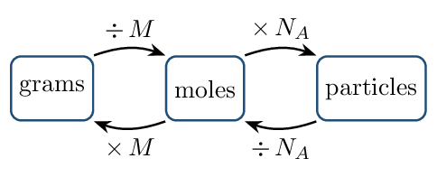
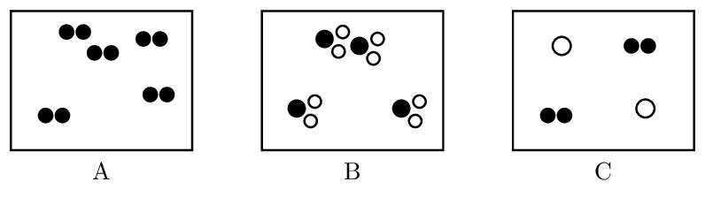
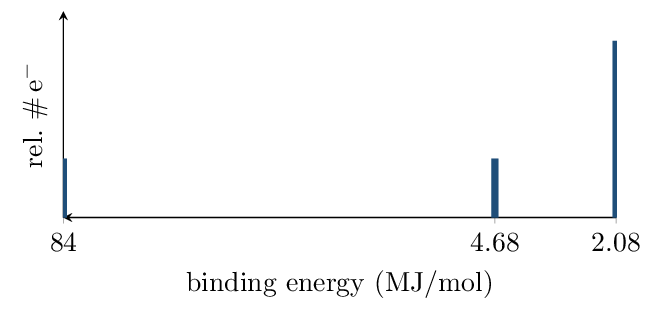

Moles and Mass Spectra Wed Aug 12
- Convert among grams, moles, and particles using molar mass and Avogadro's number.
- Compute an average atomic mass from a mass spectrum and identify the element.
Read: Zumdahl §3.2–3.5 • PDF pp. 112–123
- Express 0.00520 in scientific notation: \(5.20\times10^{-3}\)
- How many significant figures in 100.0 g? 4
- Name \(\ce{MgCl2}\): magnesium chloride
INSTRUCTION A • The mole: chemistry's counting unit 25 min
Why count by weighing CED 1.1
SP 5 Atoms are too small to count directly, so we count them the way a bank counts coins: by weighing. The bridge between mass and count is the mole:Molar mass
The molar mass \(M\) (g/mol) is numerically equal to the average atomic mass on the periodic table. For a compound, add the atoms:
\(\ce{CaCO3}\): \(M = 40.08 + 12.01 + 3(16.00) =\) 100.09 g/molThe mole road map

Every path runs through moles. There is no direct road from grams to particles — that shortcut is where setups go wrong.
How many oxygen atoms are in 10.0 g of \(\ce{CaCO3}\)? \begin{align*} n &= \frac{10.0\,\mathrm{g}}{100.09\,\mathrm{g/mol}} = 9.99e-2\,\mathrm{mol}\ \ce{CaCO3}\\ N &= (9.99\times10^{-2})(6.022\times10^{23}) = 6.02\times10^{22}\ \text{formula units}\\ N_{\ce{O}} &= 3 \times 6.02\times10^{22} = 1.80\times10^{23}\ \text{O atoms} \end{align*}
GUIDED PRACTICE • Mole conversions — you drive 15 min
- Moles in 4.50 g of \(\ce{H2O}\): 0.250 mol
- Mass of 0.30 mol of \(\ce{NaCl}\): 17.5 g (\(\approx\) 18 g)
- Molecules in 0.25 mol of \(\ce{CO2}\): \(1.5\times10^{23}\)
- Hydrogen atoms in 1.0 mol of \(\ce{NH3}\): \(1.8\times10^{24}\)
INSTRUCTION B • Mass spectra: where atomic masses come from 20 min
Isotopes and average atomic mass CED 1.2
SP 4 Most elements are mixtures of isotopes — same protons, different neutrons. The periodic-table mass is a weighted average:Reading a mass spectrum
A mass spectrometer vaporizes and ionizes a sample, then sorts ions by mass. On the spectrum:- peak position (x-axis) \(\to\) isotope mass
- peak height/area (y-axis) \(\to\) relative abundance
- number of peaks \(\to\) number of isotopes
A magnesium spectrum shows peaks at 24 u (79%), 25 u (10%), and 26 u (11%). \[ \bar{m} = 0.79(24) + 0.10(25) + 0.11(26) = 24.3\,\mathrm{} \] The average sits near 24 because \(\ce{^{24}Mg}\) dominates — a weighted average always leans toward the most abundant isotope.
“Average the peak masses” — \((24+25+26)/3 = 25\) — ignores abundance and is the single most common Unit 1 error. The AP answer requires the weighted setup even when the arithmetic is easy.
APPLICATION • Spectrum interpretation 20 min
An element's spectrum shows exactly two peaks: 69 u (60.1%) and 71 u (39.9%).
- Estimate the average atomic mass before computing: closer to 69 or 71? Why?
- Compute it.
\(0.601(69)+0.399(71)=69.8\,\mathrm{}\) — gallium.
- A student claims the sample must contain two different elements because there are two peaks. Refute in one sentence.
Boron: \(\ce{^{10}B}\) 19.9%, \(\ce{^{11}B}\) 80.1%. Estimate the average atomic mass to one decimal and justify the direction it leans.
Formulas from Data Fri Aug 14
- Compute percent composition from a formula, and a formula from percent composition.
- Distinguish empirical from molecular formulas and connect them via molar mass.
- Classify matter as pure substance or mixture from particulate diagrams.
Read: Zumdahl §3.6–3.7 • PDF pp. 123–132
Read: §1.10 • PDF pp. 53–57
- Molar mass of \(\ce{CO2}\): 44.01 g/mol
- Moles in 9.0 g \(\ce{H2O}\): 0.50 mol
- Mass spectrum peaks at 63 u and 65 u, heights 7 : 3. Which isotope is more abundant? \(\ce{^{63}Cu}\) (63 u)
INSTRUCTION A • Percent composition and empirical formulas 25 min
Percent composition CED 1.3
SP 5From percent to formula: the four-step recipe
- Assume a 100 g sample \(\to\) percents become grams.
- Convert each element to moles.
- Divide every mole value by the smallest of them.
- If ratios aren't whole, multiply all by a small integer ( .5 \(\to\times2\), .33 \(\to\times3\) ).
40.9% C, 4.58% H, 54.5% O; molar mass \(\approx 176\,\mathrm{g/mol}\). \begin{align*} \ce{C}&: 40.9/12.01 = 3.41 & \ce{H}&: 4.58/1.008 = 4.54 & \ce{O}&: 54.5/16.00 = 3.41\\ \ce{C}&: 3.41/3.41 = 1 & \ce{H}&: 4.54/3.41 = 1.33 & \ce{O}&: 3.41/3.41 = 1 \end{align*} \(\times 3\): empirical \(\ce{C3H4O3}\) (\(M_{emp}=88.06\)). Since \(176/88.06 = 2\), molecular formula = \(\ce{C6H8O6}\).
Never round 1.33 to 1. Ratios ending in .25, .33, .5, .67, .75 are signals to multiply, not round. Rounding is only for values within \(\sim\)0.05 of a whole number.
GUIDED PRACTICE • Formula determination 15 min
A compound is 75.0% C and 25.0% H by mass.
- Empirical formula:
C: \(75/12.01=6.25\); H: \(25/1.008=24.8\); ratio \(1:3.97 \to\) \(\ce{CH4}\)
- If the molar mass is 16 g/mol, the molecular formula is \(\ce{CH4}\) — empirical and molecular can be the same.
INSTRUCTION B • Pure substances, mixtures, and hydrates 20 min
Classifying matter at the particle level CED 1.4
SP 1
Diagram A shows a pure element (diatomic); B shows a pure compound; C shows a mixture. The test: a pure substance has only one kind of particle.
Mixtures have variable composition
For a mixture, composition is a measured quantity, not a formula. A 5.0 g mixture containing 2.0 g \(\ce{NaCl}\) is 40% \(\ce{NaCl}\) by mass.
APPLICATION • Hydrate analysis 20 min
\(\ce{MgSO4 . 7 H2O}\) (Epsom salt) is a compound — water molecules sit in fixed ratio inside the crystal.- Molar mass of \(\ce{MgSO4 . 7 H2O}\):
\(120.4 + 7(18.02) = 246.5\,\mathrm{g/mol}\)
- Percent water by mass:
\(126.1/246.5 \times 100\% = 51.2\%\)
- Heating drives off the water. Is the white powder left behind the same substance you started with? Justify at the particle level.
A compound is 50.0% S and 50.0% O by mass. Find its empirical formula.
Electron Configurations and Coulomb's Law Mon Aug 17
- Write ground-state configurations for atoms and ions; recognize excited states.
- Use Coulomb's law, shielding, and effective nuclear charge to compare electron energies.
Read: Zumdahl §7.5, 7.8–7.11 • PDF pp. 346–364
- Average mass from peaks 6 u (7.6%) and 7 u (92.4%): 6.9 (Li)
- Empirical formula of \(\ce{C6H12O6}\): \(\ce{CH2O}\)
- Moles of \(\ce{O}\) atoms in 0.50 mol \(\ce{CO2}\): 1.0 mol
- Protons / neutrons in \(\ce{^{37}Cl}\): 17 / 20
INSTRUCTION A • Where electrons live 25 min
Shells, subshells, and the filling order CED 1.5
SP 1Electrons occupy shells (\(n = 1, 2, 3\ldots\)) divided into subshells (s, p, d, f) holding at most 2, 6, 10, and 14 electrons.
Three rules govern ground states:- Aufbau: fill from lowest energy upward
- Pauli: max 2 electrons per orbital, opposite spins
- Hund: within a subshell, spread out singly before pairing
Noble-gas shorthand: \([\ce{Ne}]\,3s^2\,3p^4\)
Orbital diagram (3p only): \(\uparrow\downarrow\ \ \uparrow\ \ \uparrow\) — Hund's rule leaves two unpaired.
- \(\ce{P}\): \([\ce{Ne}]\,3s^2\,3p^3\)
- \(\ce{K}\): \([\ce{Ar}]\,4s^1\)
- \(\ce{Ca^2+}\): \([\ce{Ar}]\) (18 e\(^-\))
- \(\ce{S^2-}\): \([\ce{Ar}]\) — isoelectronic with \(\ce{Ca^2+}\)
Ions first, then configure. \(\ce{Ca^2+}\) means remove two electrons from Ca, not “calcium's configuration plus a label.” Species with identical configurations are isoelectronic.
An excited state obeys Pauli but violates Aufbau: \(1s^2\,2s^1\,2p^4\) is excited nitrogen (an electron promoted before 2s filled). If any lower orbital is short while a higher one is occupied, it's excited — a favorite AP multiple-choice disguise.
GUIDED PRACTICE • Configuration checks 15 min
For each, ground state, excited state, or impossible?- \(1s^2\,2s^2\,2p^5\): ground state (F)
- \(1s^2\,2s^1\,2p^6\): excited (2s not full, 2p occupied)
- \(1s^2\,2s^3\,2p^4\): impossible (2s holds max 2)
INSTRUCTION B • Coulomb's law: the engine behind everything 20 min
Attraction, distance, and shielding CED 1.5
SP 6Coulomb's law, qualitatively: attraction between charges grows with larger charges and shrinks with greater distance.
For an electron in an atom, the pull it feels is the effective nuclear charge \(Z_{\text{eff}}\):Core electrons shield well; electrons in the same shell shield poorly.
In sulfur, 3p electrons are higher in energy than 3s: same shell, but the p subshell penetrates less, so it is shielded slightly more and held slightly less tightly. Energy ordering within an atom is set by the tug-of-war between \(Z\) and shielding — this is exactly what PES will let us measure on Wednesday.
APPLICATION • Ranking with reasons 20 min
- Which electron is held more tightly: a 2p in F or a 2p in O? Two-part answer: claim, then Coulombic reason.
- Na's 3s electron vs Na's 2p electrons: which is easier to remove, and why?
Write the shorthand configuration of \(\ce{Al^3+}\) and name one species it is isoelectronic with.
Photoelectron Spectroscopy Wed Aug 19
- Explain what a PES experiment measures and how.
- Read a PES spectrum: position \(\to\) binding energy, area \(\to\) electron count; identify elements.
Read: Zumdahl §7.12 • PDF pp. 368–369
- Shorthand configuration of Mg: \([\ce{Ne}]\,3s^2\)
- Which is held more tightly, a 1s or 2s electron in the same atom? Why, in five words or fewer? 1s — closer to nucleus
- \(\ce{^{25}Mg}\) has how many neutrons? 13
INSTRUCTION A • The experiment 25 min
Knocking electrons out and timing them CED 1.6
SP 4 In photoelectron spectroscopy, high-energy photons strike a sample and eject electrons. We measure each ejected electron's kinetic energy. Energy conservation gives the electron's binding energy:A tightly held electron exits slowly (low KE, high BE); a loosely held electron exits fast.
Anatomy of the spectrum
- x-axis: binding energy (usually decreasing rightward)
- each peak: one subshell
- peak area: number of electrons in that subshell

Height is electron count, not stability; position is binding energy, not abundance. Students who learn mass spectra first often transplant “height = abundance” onto PES. Different instrument, different axis.
GUIDED PRACTICE • Read one yourself 15 min
A spectrum shows peaks at 273, 26.8, 20.2, 2.44, 1.25 MJ/mol with areas 2 : 2 : 6 : 2 : 5.
- Configuration: \(1s^2\,2s^2\,2p^6\,3s^2\,3p^5\)
- Element: chlorine
- Which peak represents the electrons lost first in ionization? 1.25 MJ/mol (3p)
INSTRUCTION B • What PES proves 20 min
Evidence for shells and subshells CED 1.6
SP 6 PES is the experimental receipt for the shell model:- Discrete peaks \(\to\) electrons occupy discrete energy levels, not a continuum.
- 2s and 2p peaks are close but distinct \(\to\) shells contain subshells.
- Across a period, every peak shifts to higher BE — more protons, same shielding.
B 1s: 19.3 MJ/mol. F 1s: 67.2 MJ/mol. Same subshell, same shielding (\(\approx\) none for 1s) — but F has 9 protons to B's 5. Binding energy tracks \(Z_{\text{eff}}\), and nothing shields the 1s.
APPLICATION • Full spectrum analysis 20 min
Phosphorus: peaks at 208, 18.7, 13.5, 1.95, 1.06 MJ/mol.
- Label each peak with its subshell and electron count.
- Predict how sulfur's spectrum differs. Two specific changes.
- Sketch space — draw P's spectrum with correct relative areas:
One PES peak of element X sits at 0.74 MJ/mol with area 2; the next peak is at 5.31 MJ/mol. X's 0.74 peak is 3s. Identify X and justify from the areas.
Periodic Trends and Ionic Compounds Fri Aug 21
- Explain — not just state — trends in radius, ionization energy, and electronegativity.
- Use successive ionization energies to locate an element's group.
- Predict ionic charges and write ionic formulas.
Read: Zumdahl §7.12 • PDF pp. 364–371
Read: §8.4 • PDF pp. 400–404
- PES: peak area tells you electron count in subshell
- Configuration of \(\ce{O^2-}\): \(1s^2 2s^2 2p^6\) (\(=[\ce{Ne}]\))
- Percent O in \(\ce{CO2}\) (nearest whole): 73%
INSTRUCTION A • The trends, with their engine 25 min
Radius, ionization energy, electronegativity CED 1.7
SP 6Every trend explanation on the AP exam is built from the same three levers: nuclear charge \(Z\), distance/shell \(n\), and shielding.
| Property | Trend | Coulombic reason |
|---|---|---|
| Atomic radius | down: up across: down | down: more shells; across: same shells, rising \(Z_{\text{eff}}\) pulls cloud inward |
| Ionization energy | down: down across: up | valence electron closer to a stronger pull is harder to remove |
| Electronegativity | down: down across: up | same engine: \(Z_{\text{eff}}\) up, distance down |
“F is more electronegative because it wants a full octet” scores zero. Octet language is not an explanation; the rubric wants nuclear charge, distance, and shielding. Practice saying the Coulombic sentence.
The two famous IE anomalies (period 2)
- B \(<\) Be: boron's outermost electron is in 2p, higher in energy than beryllium's 2s.
- O \(<\) N: oxygen's fourth 2p electron is paired, and electron–electron repulsion makes it easier to remove.
GUIDED PRACTICE • Rank and justify 15 min
- Radius, largest first: Na, Mg, Al: Na \(>\) Mg \(>\) Al
- First IE, largest first: Ne, Na, Ar: Ne \(>\) Ar \(>\) Na
- Which is larger, \(\ce{Cl}\) or \(\ce{Cl-}\)? One-line reason. \(\ce{Cl-}\) — same \(Z\), more e\(^-\)/repulsion
INSTRUCTION B • Successive IE and ionic compounds 20 min
Reading a successive-ionization table CED 1.7
SP 4Removing electrons one at a time, IE rises gradually — until you hit the core. The giant jump marks the end of the valence electrons.
Element X (kJ/mol): \(IE_1 = 578\), \(IE_2 = 1817\), \(IE_3 = 2745\), \(IE_4 = 11{,}577\). The cliff sits between \(IE_3\) and \(IE_4\) \(\to\) 3 valence electrons \(\to\) group 13. (X is aluminum.)
From configurations to ionic formulas CED 1.8
SP 5Main-group atoms gain or lose electrons to reach a noble-gas configuration: metals lose (cations), nonmetals gain (anions). The compound's formula balances total charge to zero.
- \(\ce{Ca}\) + \(\ce{Br}\) \(\to\) \(\ce{CaBr2}\)
- \(\ce{Al}\) + \(\ce{O}\) \(\to\) \(\ce{Al2O3}\)
- \(\ce{Mg}\) + \(\ce{N}\) \(\to\) \(\ce{Mg3N2}\)
APPLICATION • Data-based reasoning 20 min
- An element has \(IE_1 = 738\), \(IE_2 = 1451\), \(IE_3 = 7733\) kJ/mol. State its group and the formula of its chloride.
- Rank \(\ce{K+}\), \(\ce{Cl-}\), \(\ce{Ca^2+}\) by radius (all are isoelectronic with Ar) and give the Coulombic reason.
Why is \(\ce{Na+}\) much smaller than Na? One Coulombic sentence.